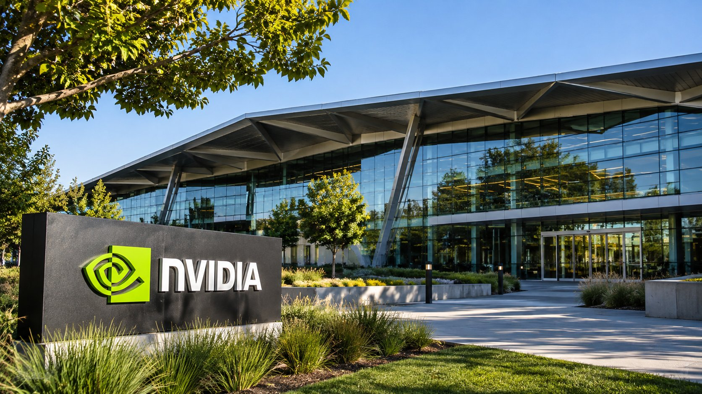

A Company Is Bigger Than One Person

When a prominent CEO or founder leaves a company, financial markets sometimes react as though the entire business has suddenly lost its value. Billions can disappear from a company’s market capitalization overnight.
But what has actually changed?
When Warren Buffett announced his retirement as CEO of Berkshire Hathaway, its shares fell more than 5% on the following trading day. Yet Berkshire still owned its businesses, employed hundreds of thousands of people, and maintained its established operations.
The same principle applies to Nvidia. Jensen Huang has been instrumental to its success, but Nvidia is more than its CEO. Its engineers, technology, products, and customer relationships are what make the company valuable.
Perhaps the strongest example is Apple. When Steve Jobs died in 2011, many questioned whether the company could succeed without him. Apple may have lost some of its creative edge, but under Tim Cook, it has continued to grow into one of the world’s most valuable businesses.
Exceptional leaders matter. They shape strategy, culture, and innovation. But their departures do not automatically erase everything an organization has built.
When we buy shares in a company, are we investing in the person leading it, or in its products, people, customers, and ability to generate value?
A great leader builds a successful company. A truly great company can succeed without them.
Cover image: AI-generated editorial illustration, not an actual photograph.